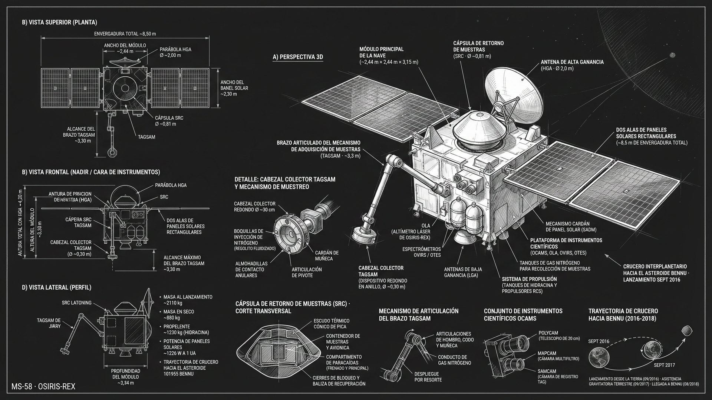

OSIRIS-REx

La nave que fue a un asteroide, tomó una muestra y la trajo: 121,6 gramos de Bennu que aterrizaron en el desierto de Utah en 2023. Lo que quedó en el espacio no se apagó: ahora se llama OSIRIS-APEX y va camino de Apophis.
En ruta a Apophis, con llegada prevista en junio de 2029, después de sobrevolar la Tierra el 23 de septiembre de 2025. La cápsula con 121,6 gramos de Bennu regresó el 24 de septiembre de 2023. Personas: Dante Lauretta, Rich Burns
Sigue funcionando, y por eso es una excepción en esta web. Está aquí porque su misión de recoger la muestra ya terminó: la cápsula volvió y se abrió, y lo que sigue en el espacio es la nave reutilizada para otro trabajo, camino de un asteroide que pasará cerca de la Tierra en 2029.
Lo que hizo
- Llegar a Bennu — El 3 de diciembre de 2018 llegué al asteroide Bennu, de unos 500 metros de ancho, y lo cartografié durante casi dos años antes de elegir dónde tocar.
- El toque y la muestra — El 20 de octubre de 2020 bajé hasta la superficie, disparé nitrógeno y atrapé polvo y piedras: 121,6 gramos de Bennu que quedaron guardados en mi cápsula.
- La cápsula volvió — El 24 de septiembre de 2023 solté la cápsula sobre el desierto de Utah; se abrió en Houston y hoy la muestra se estudia en laboratorios de todo el mundo.
- Segunda misión: Apophis — En septiembre de 2025 pasé a 3.438 km de la Tierra y seguí hacia Apophis, al que llegaré en 2029 para ver cómo el paso cercano a nuestro planeta lo ha cambiado.
Modelo 3D, chat y cómic, en tres idiomas
Fuentes
Ver el índice completo · Proyecto del NASA Space Apps Challenge 2026. Contenido con fuentes citadas.